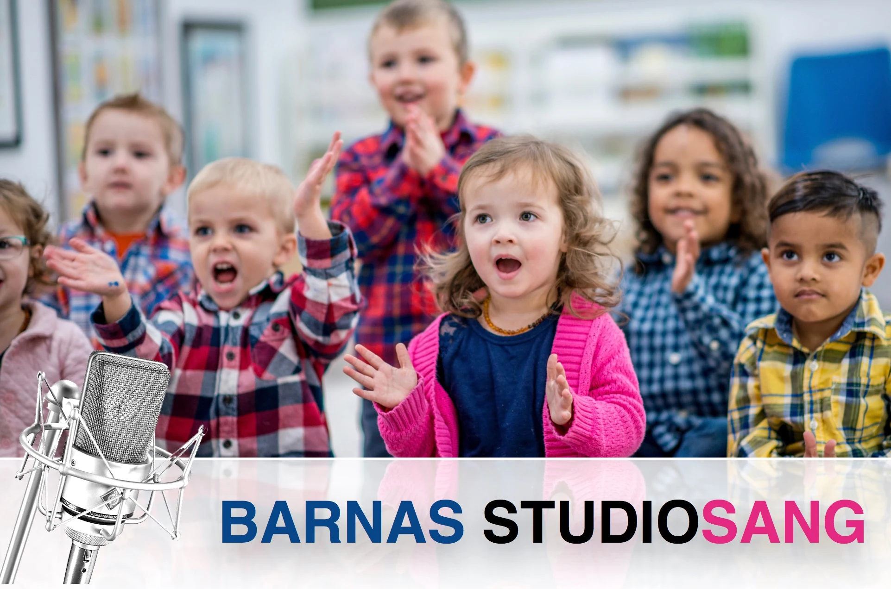
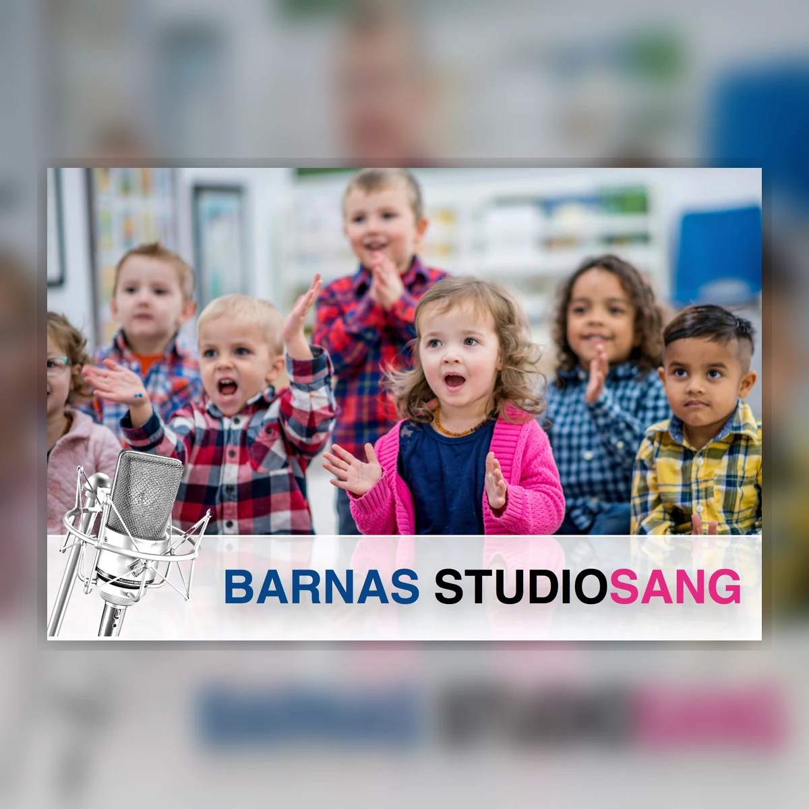
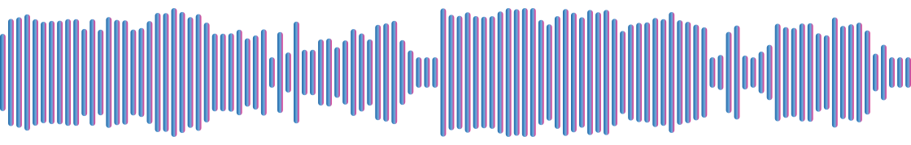

For barna
Barna får synge, lytte, bruke stemmen, oppleve mikrofoner og delta i en ekte innspillingsprosess. Det skaper læring, mestring og musikkglede.
Barnas Studiosang
En ekte musikk- og innspillingsopplevelse for barna – og en profesjonell utgivelse som gjør barnehagens musikkarbeid synlig.

Kjent fra tidligere
Barnas Studiosang henvender seg til barnehager, skoler, SFO og kor og gjennomfører musikk- og sanginnspillinger med barn.
Virksomheten startet i 2009 under navnene Barnehagesang og Skolesang. Mange kjenner oss derfor fra tidligere innspillingsprosjekter.
I dag videreføres erfaringen i et oppdatert konsept med mobil innspilling, profesjonell musikkproduksjon og mulighet for utgivelse på Spotify.
Synlig musikkglede
Barnas Studiosang gjør barnehagens musikkarbeid synlig gjennom en profesjonell Spotify-utgivelse som skaper stolthet hos barna, engasjement hos foreldrene og en tydelig musikalsk profil for barnehagen.
Lydeksempel
Et utvalg tidligere barnehageinnspillinger som viser hvordan barnas sang kan utvikles til en ferdig og helhetlig musikkproduksjon.

3:38 · Utdrag fra tidligere prosjekter

Verdi for hele barnehagen
Prosjektet kombinerer musikk, læring, fellesskap og et ferdig resultat som familiene kan høre og dele.
Barna får synge, lytte, bruke stemmen, oppleve mikrofoner og delta i en ekte innspillingsprosess. Det skaper læring, mestring og musikkglede.
Å høre barna synge sammen gir et spesielt innblikk i barnehagehverdagen og et musikalsk minne familien kan ta del i.
Utgivelsen dokumenterer arbeidet med sang, språk, rytme, samarbeid, kreativitet og fellesskap på en konkret og engasjerende måte.
Et resultat alle kan høre
Det ferdige prosjektet kan gis ut på Spotify og andre strømmetjenester gjennom vårt plateselskap. Barnehagen får en profesjonell musikkutgivelse som kan deles med foreldre, familie og andre som ønsker å høre resultatet.
Artistnavn, cover, publisering og nødvendige samtykker avklares med barnehagen før utgivelsen.
Barnehagens navn
Pedagogisk musikkopplevelse
Opplegget tilpasses barnas alder og gruppestørrelse, og tar utgangspunkt i sangene de allerede kjenner fra barnehagehverdagen.
Sangforslag
Barnehagen velger først og fremst sanger barna allerede kjenner og bruker. Vi har arbeidet med en lang rekke barnesanger i tidligere prosjekter, og har akkompagnement og produksjonsgrunnlag til mange av dem.
Listen kan brukes som inspirasjon når barnehagen setter sammen sitt repertoar. Endelig sangvalg avklares før prosjektet starter.
174 sangforslag
Ingen sangtitler matcher søket.
Fra sangstund til utgivelse
Vi tar utgangspunkt i sangene barna allerede kjenner og synger i barnehagehverdagen.
Sangene brukes i det vanlige musikkarbeidet fram mot opptaksdagen.
Vi kommer med mobilt studioutstyr og gjennomfører opptaket i samarbeid med de ansatte.
Opptakene redigeres, mikses og klargjøres som en samlet musikkutgivelse.
Cover og utgivelse godkjennes før musikken publiseres og deles med familiene.
Dette er inkludert
Vi tar hånd om det tekniske og musikalske arbeidet fra planlegging til ferdig utgivelse.
Tidligere prosjekter
Gjennom årene har vi gjennomført musikk- og sanginnspillinger med barn i en lang rekke barnehager, skoler og andre miljøer.
Priser
Prisene inkluderer planlegging, opptaksbesøk, produksjon, cover og digital utgivelse.
Inntil
Et kompakt prosjekt for én eller flere barnegrupper.
Inntil
God plass til flere avdelinger og et variert repertoar.
Inntil
For større prosjekter med mange grupper og sanger.
Vi tar utgangspunkt i sangene barnehagen allerede bruker. Dersom en sang krever nytt akkompagnement eller ekstra produksjonsarbeid, avtales et eventuelt tillegg på forhånd.
Foreldrespleis
Barnehagen står som bestiller og mottar én samlet faktura. Prosjektet kan finansieres gjennom en felles innsamling blant foreldrene, slik at mange familier bidrar med et mindre beløp til en opplevelse som kommer hele barnegruppen til gode.
Barnehagen organiserer informasjonen til foreldrene. Vi kan legge ved et enkelt infoskriv om Barnas Studiosang og det planlagte prosjektet.
Ta neste steg
Ta kontakt for praktisk informasjon og et tilbud tilpasset barnehagen.
Takk! Skjemaet kobles til en ekte innsending ved publisering.